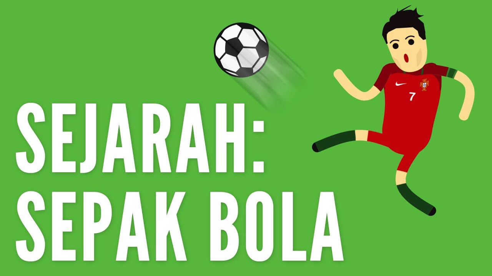
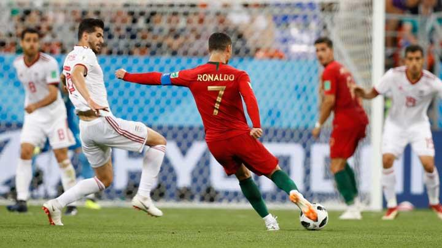

Left
Materi Sepak Bola
Middle
Sepak Bola Sepak bola (bahasa Inggris: Association Football, Football, atau Soccer), secara resmi dikenal sebagai sepak bola asosiasi, adalah cabang olahraga yang menggunakan bola yang umumnya terbuat dari bahan kulit dan dimainkan oleh dua tim yang masing-masing beranggotakan 11 (sebelas) orang pemain inti dan beberapa pemain cadangan.

Sepak Bola bertujuan untuk mencetak gol sebanyak-banyaknya dengan memasukan bola ke gawang lawan. Sepak bola dimainkan dalam lapangan terbuka yang berbentuk persegi panjang, di atas rumput atau rumput sintetis.

Right
Sejarah olahraga sepak bola (permainan menendang bola) dimulai sejak abad ke-2 dan ke-3 sebelum Masehi di Tiongkok. Pada masa Dinasti Han tersebut, masyarakat menggiring bola kulit dengan menendangnya ke jaring kecil.Permainan serupa juga dimainkan di Jepang dengan sebutan Kemari. Di Italia, permainan menendang dan membawa bola juga digemari terutama mulai abad ke-16.
Artikel Sepak Bola Lain